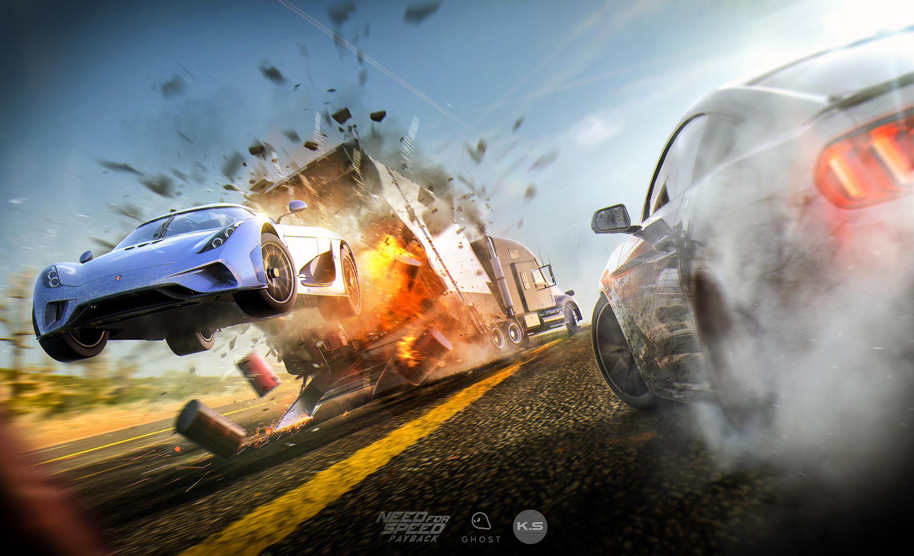

Need for Speed Payback es un juego arcade de conducción en mundo abierto, donde ahora contamos con una mayor carga narrativa, gracias a la cual descubrimos una historia de venganza que nos llevará por una ciudad inspirada por Nevada, en Estados Unidos. Las bases jugables siguen siendo las mismas que Criterion Games inspiró en su día con Burnout Paradise, bases que, para bien o para mal, no han cambiado en los últimos casi 10 años.
Aspectos Criticos del Juego

Una de las tantas misiones sobre la carretera
- El juego posee un apartado gráfico Increible aunque esto no lo exenta de otras deficiencias en el aspecto más importante de un juego de carreras: La conducción
- Los vehiculos pueden manejarse comodamente o del todo son un ladrillo, no giran bien o salen volando con un minimo choque.
- Misiones que no cambian nunca y una banda sonora que no es tan agradable como en entregas anteriores, sumandole que muchos menús son copias exactas de la entrega anterior del juego sacada a la venta en el año 2015.
Video con una Reseña del Juego
Una pequeña reseña por un videojugador fanático de la saga